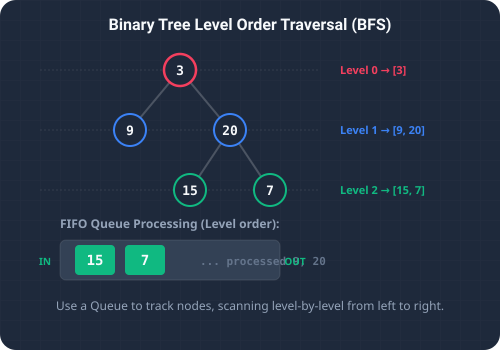

What We're Solving
Navigating a binary tree is a core operation in computer science. While Depth-First Search (DFS) strategies like in-order, pre-order, and post-order traversals dive deep down a branch before backtracking, Level Order Traversal (also known as Breadth-First Search or BFS) processes the tree horizontally.
The goal is to visit all nodes at the current height (level) from left to right before moving down to the next generation. The final output is structured as a list of lists, where each sublist contains the node values corresponding to a specific depth level.
For instance, consider the following binary tree structure:
3
/ \
9 20
/ \
15 7
A level order traversal reads this level-by-level, producing the output nested structure: [[3], [9, 20], [15, 7]]. This traversal pattern is widely used in real-world scenarios, such as calculating the minimum depth of a tree, finding the widest level, serializing hierarchical structures, and broadcasting network packets across peers.

To visualize this process, imagine cataloging a family tree:
- Depth-First Search (The Lineage Focus): You pick one grandchild, trace their lineage directly back to the first ancestor, then repeat for each sibling. You traverse vertically down one branch at a time.
- Breadth-First Search (The Generation Focus): You group family members strictly by generation. First, you write down the patriarch and matriarch (Level 0). Next, you record all of their children (Level 1). Finally, you document all of the grandchildren (Level 2).
The Logic Behind It
Breadth-First Search (BFS) using a Queue (O(n) Time, O(n) Space)
To implement BFS on a binary tree, we leverage a queue data structure, which operates on a First-In, First-Out (FIFO) basis. The challenge is knowing where one level ends and the next begins. We solve this by capturing the queue's size at the start of each iteration loop.
- Initialization: We instantiate a queue and enqueue the root node.
- Level Partitioning: During each iteration of the outer loop, we measure
int levelSize = queue.size(). This measurement tells us exactly how many nodes are currently in the queue for the active level. - De-queue & En-queue Loop: We execute a nested loop exactly
levelSizetimes. In each iteration, we poll a node from the queue, append its value to the current level's list, and add its non-null left and right child nodes to the queue.
levelSize count of the current level. Once the nested loop completes, we commit the level's list to our master output. This algorithm runs in O(n) time complexity since we visit every node exactly once. The space complexity is O(w), where w is the maximum width of the tree (representing the leaf node level stored in the queue).
Detailed Trace Walkthrough
Let's trace this level-by-level execution on our example tree: 3 (root) with left child 9 and right child 20 (which has children 15 and 7).
- Step 1 (Initialization):
- Create empty results list:
result = []. - Initialize queue and offer root node:
queue = [3].
- Create empty results list:
- Step 2 (Processing Level 0):
- Read queue size:
levelSize = 1. - Initialize empty list for this level:
level = []. - Dequeue node
3→level = [3]. - Offer children of node
3to the queue: left child9and right child20. - Queue is now:
[9, 20]. - Add level list to results:
result = [[3]].
- Read queue size:
- Step 3 (Processing Level 1):
- Read queue size:
levelSize = 2(processing nodes9and20). - Initialize level list:
level = []. - Dequeue node
9→level = [9]. Node9has no children. - Dequeue node
20→level = [9, 20]. - Offer children of node
20to the queue: left child15and right child7. - Queue is now:
[15, 7]. - Add level list to results:
result = [[3], [9, 20]].
- Read queue size:
- Step 4 (Processing Level 2):
- Read queue size:
levelSize = 2(processing nodes15and7). - Initialize level list:
level = []. - Dequeue node
15→level = [15]. Node15has no children. - Dequeue node
7→level = [15, 7]. Node7has no children. - Queue is now empty:
[]. - Add level list to results:
result = [[3], [9, 20], [15, 7]].
- Read queue size:
- Step 5 (Termination):
- The queue is empty, terminating the outer loop. The function returns the nested list:
[[3], [9, 20], [15, 7]].
- The queue is empty, terminating the outer loop. The function returns the nested list:
Code Breakdown
Here are the critical lines in our Java implementation:
int size = queue.size();is the key state snapshot. By locking in the size before the inner loop begins, we ensure we only dequeue nodes belonging to the current level, preventing the loop from trailing into the next level's children.queue.offer(root);safely initializes the queue without throwing exceptions on capacity limits.if (curr.left != null) queue.offer(curr.left);checks node presence dynamically to avoid inserting null pointers into our FIFO line.
Full Java Implementation
Below is the complete, self-contained Java class solving the LeetCode challenge, including a static binary tree node definition and a main driver method to print output trace details.
package io.practise.dsa;
import java.util.*;
public class LevelOrderTraversal {
public static class TreeNode {
public int val;
public TreeNode left, right;
public TreeNode(int val) { this.val = val; }
}
// BFS Using Queue - O(n)
public List<List<Integer>> levelOrder(TreeNode root) {
List<List<Integer>> result = new ArrayList<>();
if (root == null) return result;
Queue<TreeNode> queue = new LinkedList<>();
queue.offer(root);
while (!queue.isEmpty()) {
int size = queue.size();
List<Integer> level = new ArrayList<>();
for (int i = 0; i < size; i++) {
TreeNode curr = queue.poll();
level.add(curr.val);
if (curr.left != null) queue.offer(curr.left);
if (curr.right != null) queue.offer(curr.right);
}
result.add(level);
}
return result;
}
public static void main(String[] args) {
LevelOrderTraversal solver = new LevelOrderTraversal();
TreeNode root = new TreeNode(3);
root.left = new TreeNode(9);
root.right = new TreeNode(20);
root.right.left = new TreeNode(15);
root.right.right = new TreeNode(7);
System.out.println("--- Level Order Traversal Demonstration ---");
List<List<Integer>> result = solver.levelOrder(root);
System.out.println("Levels: " + result);
}
}Conclusion & Takeaways
Solving the Level Order Traversal problem highlights how we can leverage key data structures like Queues to transition from vertical recursion to horizontal iterative partitioning. Mastering BFS forms the basis for parsing complex graph networks, shortest-path problems, and hierarchical models.